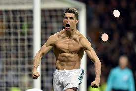
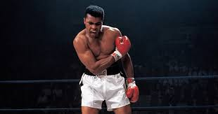
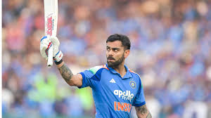
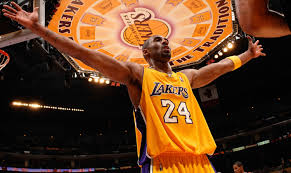

David Goggins A former Navy SEAL turned ultramarathon legend, Goggins transformed himself from a broken, overweight man into one of the world's toughest endurance athletes. He lives by the belief that the mind quits long before the body does.

Cristiano Ronaldo (CR7) One of the greatest footballers to ever grace the pitch, Ronaldo has shattered record after record with his relentless work ethic and elite athleticism. Five Ballon d'Or titles and over 900 career goals tell only half the story of his obsession with greatness.

Muhammad Ali The Greatest of All Time, Ali combined blinding speed, poetic trash talk, and unshakeable courage to dominate heavyweight boxing across two decades. He was as mighty outside the ring as inside it — standing firm against injustice at the cost of his own career.

Virat Kohli India's most ferocious run-machine, Kohli redefined fitness and intensity in cricket with a hunger that never seems satisfied. His ability to chase down any target under pressure has made him a generational icon of the sport.

Kobe Bryant The Black Mamba embodied an ice-cold mentality and surgical precision that made him one of basketball's all-time greats, winning five NBA championships with the LA Lakers. His "Mamba Mentality" — outworking everyone, every single day — continues to inspire millions long after his passing.